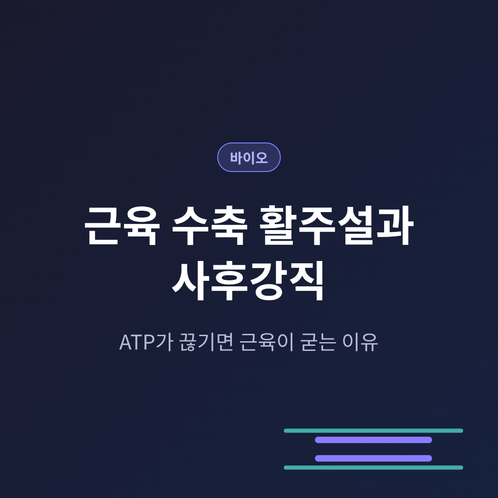
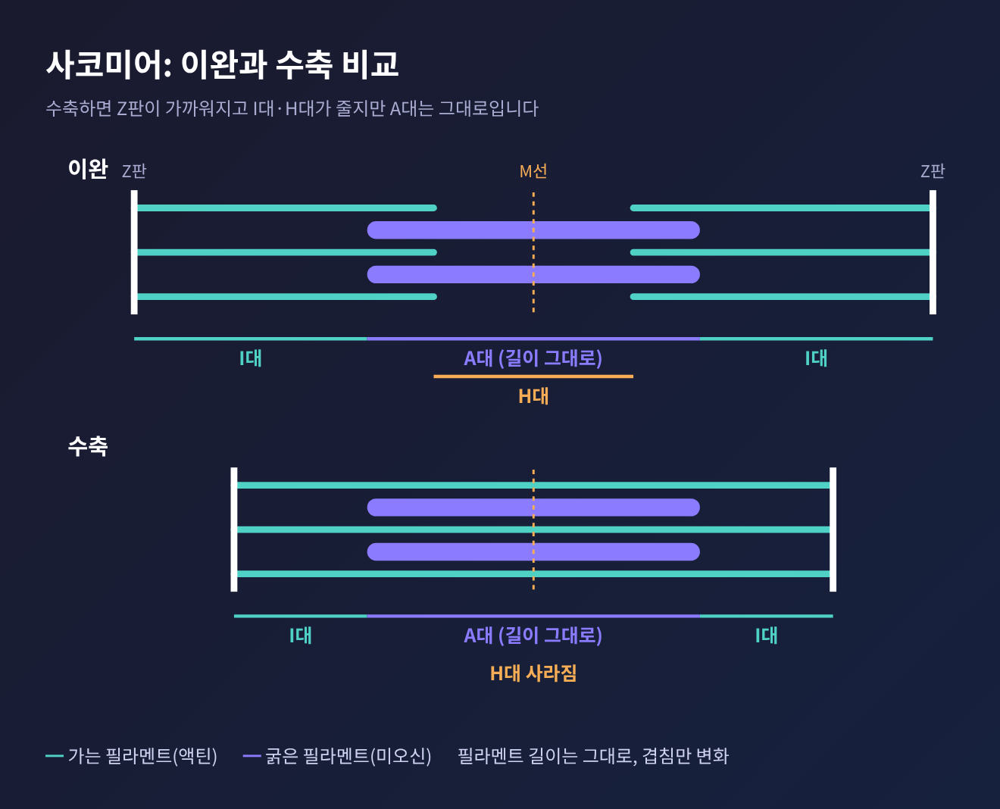
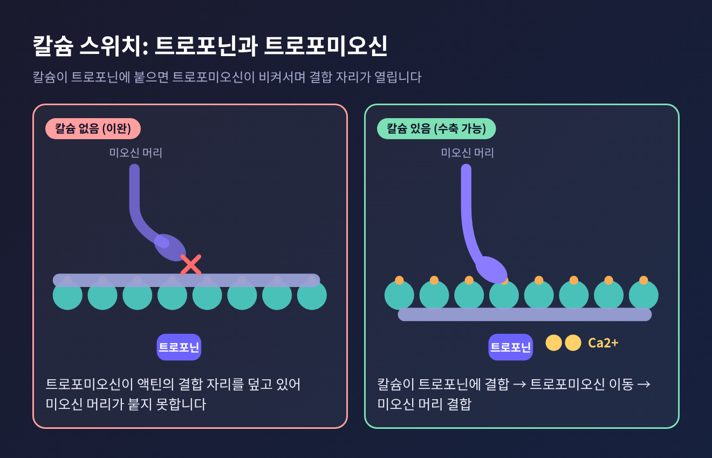
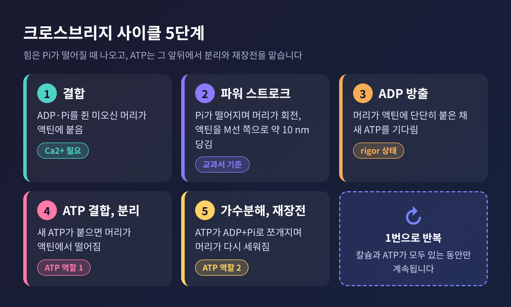
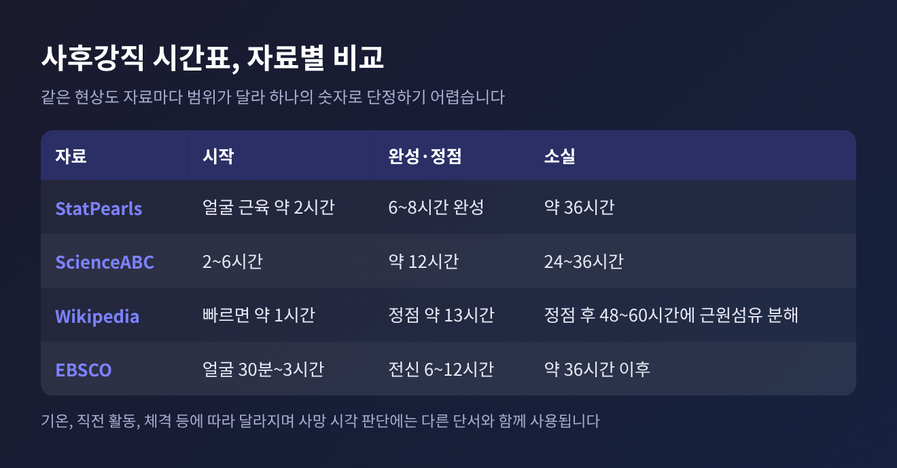
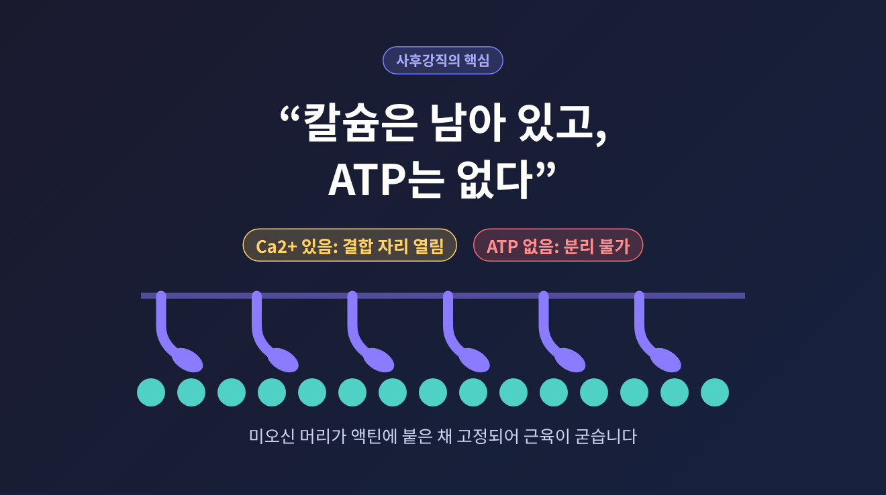

오늘은 근육 수축의 활주설을 ATP의 역할이라는 한 줄기로 따라가 보려 합니다. 근육은 굵은 필라멘트와 가는 필라멘트가 서로 미끄러져 들어가며 줄어듭니다. 이때 ATP는 힘을 내는 데만 쓰이지 않고 붙은 것을 떼어 내는 데도 쓰입니다. 그래서 ATP가 사라지면 근육은 풀리지 못하고 굳는데, 이것이 사후강직입니다.
예전에는 근육이 고무줄처럼 필라멘트 자체가 줄어든다고 상상하기 쉬웠습니다. 1954년 5월 22일자 학술지 Nature에 실린 두 편의 논문이 그림을 바꿨습니다. Andrew Huxley와 Niedergerke는 개구리 근육을 간섭 현미경으로, Hugh Huxley와 Jean Hanson은 토끼 근육을 전자현미경 등으로 관찰했습니다.
결론은 이렇습니다. 필라멘트의 길이는 그대로이고, 서로 겹치는 정도만 달라집니다. 이를 활주설이라 부릅니다.
근섬유 속 근원섬유에는 사코미어라는 단위가 일렬로 이어져 있습니다. 이 단위 하나하나가 줄어드는 것이 모여 근육 전체의 수축이 됩니다.
구조는 단순합니다. 가는 필라멘트(액틴)는 양끝의 Z판에 매달려 있고, 굵은 필라멘트(미오신)는 가운데 M선에 고정되어 있습니다. 현미경에서 어둡게 보이는 A대에는 굵은 필라멘트가 있고, 밝은 I대에는 굵은 필라멘트와 겹치지 않는 액틴만 있습니다. 수축하면 Z선이 서로 가까워지고 I대는 줄어듭니다. 그런데 A대의 폭은 변하지 않습니다. 포유류 골격근의 A대는 약 1.85 µm로 보고되어 있습니다. A대가 그대로라는 사실이 필라멘트 자체는 줄지 않는다는 증거입니다.

굵은 필라멘트 하나에는 미오신 분자가 약 300개 모여 있습니다. 미오신은 머리가 둘인 단백질로, 머리마다 액틴에 붙는 자리와 ATP가 붙는 자리가 하나씩 있습니다. 이 머리가 가는 필라멘트 쪽으로 뻗어 나온 것이 교차다리, 곧 크로스브리지입니다.
참고로 사코미어가 늘어나 있을 때도, 지나치게 줄었을 때도 힘은 떨어집니다. 너무 늘어나면 교차다리를 만들 머리가 줄고, 너무 줄면 액틴끼리 서로 간섭하기 때문입니다.
미오신 머리가 있다고 해서 늘 붙는 것은 아닙니다. 쉬고 있을 때 액틴의 결합 자리는 트로포미오신이 덮고 있습니다. 트로포미오신은 액틴 사슬을 따라 감기는 가는 단백질이고, 여기에 칼슘 결합 자리를 가진 트로포닌이 붙어 복합체를 이룹니다.
신호가 오면 상황이 바뀝니다. 운동신경의 신호가 근섬유막과 T세관을 따라 퍼지고, 근소포체에서 칼슘이 쏟아져 나옵니다. 칼슘이 트로포닌 C에 붙으면 복합체의 모양이 바뀌고, 트로포미오신이 비켜서며 결합 자리가 열립니다.

신호가 끝나면 칼슘 채널이 닫히고, ATP로 움직이는 펌프가 칼슘을 근소포체로 되돌립니다. 트로포미오신은 다시 자리를 덮습니다. 수축을 풀 때도 ATP가 든다는 점을 기억해 두시기 바랍니다.
결합 자리가 열렸을 때 일어나는 일을 순서대로 적어 보겠습니다.

여기서 ATP의 일을 정리할 수 있습니다. 첫째는 분리, 둘째는 재장전, 셋째는 칼슘 펌프의 구동입니다. 힘을 내는 파워 스트로크 자체는 Pi가 떨어질 때 일어나고, ATP는 그 앞뒤를 맡습니다. 흔히 ATP가 근육을 당긴다고 생각하는데, 실은 ATP가 풀어 주어야 다음 당김이 가능합니다.
이 사이클은 칼슘과 ATP가 모두 있는 동안에만 반복됩니다. 근육에 저장된 ATP는 몇 초 분량에 불과합니다. 크레아틴인산이 약 15초, 혐기성 해당과정이 약 1분을 이어 주고, 이후에는 유산소 호흡이 포도당 한 분자당 약 36 ATP로 휴식기와 중등도 활동기 근육 ATP의 약 95%를 책임집니다.
죽음 이후 호흡이 멈추면 유산소 ATP 생산이 끊깁니다. 처음에는 근육이 오히려 축 늘어집니다. 크레아틴인산과 글리코겐이 한동안 ATP를 대 주기 때문입니다. 이 저장분이 바닥나면 이야기가 달라집니다.
세포막과 근소포체가 무너지며 칼슘이 세포질로 샙니다. 칼슘이 트로포닌에 붙어 결합 자리가 열리고, 미오신 머리가 액틴에 붙습니다. 그런데 이제 새 ATP가 없습니다. 머리는 떨어지지 못하고, 근육은 굳습니다. 사이클의 3번에서 4번으로 넘어가지 못한 채 멈춘 상태입니다.
"칼슘은 남아 있고 ATP는 없다." 사후강직은 이 한 문장으로 요약됩니다.

굳은 근육이 다시 풀리는 이유는 ATP가 돌아와서가 아닙니다. 효소와 세균이 액틴과 미오신 복합체 자체를 분해하기 때문입니다. 즉 이완은 회복이 아니라 해체입니다.
시작과 끝을 몇 시간으로 못 박기는 어렵습니다. 제가 확인한 자료만 해도 표기가 제각각입니다.

공통된 흐름은 있습니다. 눈꺼풀과 턱 같은 작은 근육에서 시작해 대체로 위에서 아래로 번지고, 풀릴 때도 비슷한 순서를 따릅니다. 1811년에 제안된 Nysten 법칙입니다. 다만 모든 경우에 맞는 규칙은 아닙니다.
기온도 변수입니다. 따뜻하면 빨라지고 차가우면 늦어집니다. 격렬한 운동이나 경련, 고열이 있었다면 더 일찍 시작하고 짧게 끝나는 경향이 있습니다. 그래서 사후강직만으로 사망 시각을 정하지는 않습니다. 체온 하강이나 시반 같은 다른 단서와 함께 보고, 결과도 정확한 시각이 아닌 개연성 있는 구간으로 적습니다.
같은 기전은 식탁 위에서도 확인됩니다. 도축 직후 고기를 15°C 아래로 급히 식히면 칼슘이 방출되고, 아직 남은 ATP를 쓰며 사코미어가 원래 길이의 약 3분의 1까지 줄어드는 냉각 수축(cold shortening)이 일어납니다. 이를 막으려고 소 도체에 전기 자극을 주어 미리 ATP를 소진시키기도 합니다. ATP와 칼슘이 근육의 상태를 좌우한다는 점을 보여 주는 사례입니다.
정리하면 이렇습니다. 활주설은 필라멘트가 줄어드는 이야기가 아니라 미끄러지는 이야기이고, 칼슘은 문을 열며, ATP는 붙이는 쪽이 아니라 떼는 쪽에서 더 결정적입니다.
다만 이 글은 교양 차원의 설명이며, 개인의 건강이나 의료 판단에 쓸 수 있는 내용은 아닙니다. 수치도 자료와 실험 조건에 따라 달라진다는 점을 말씀드립니다.
결국 남는 것은 하나입니다. 근육이 풀리려면 에너지가 필요하다는 사실입니다. 쥐는 일보다 놓는 일에 더 큰 비용이 드는 셈입니다.